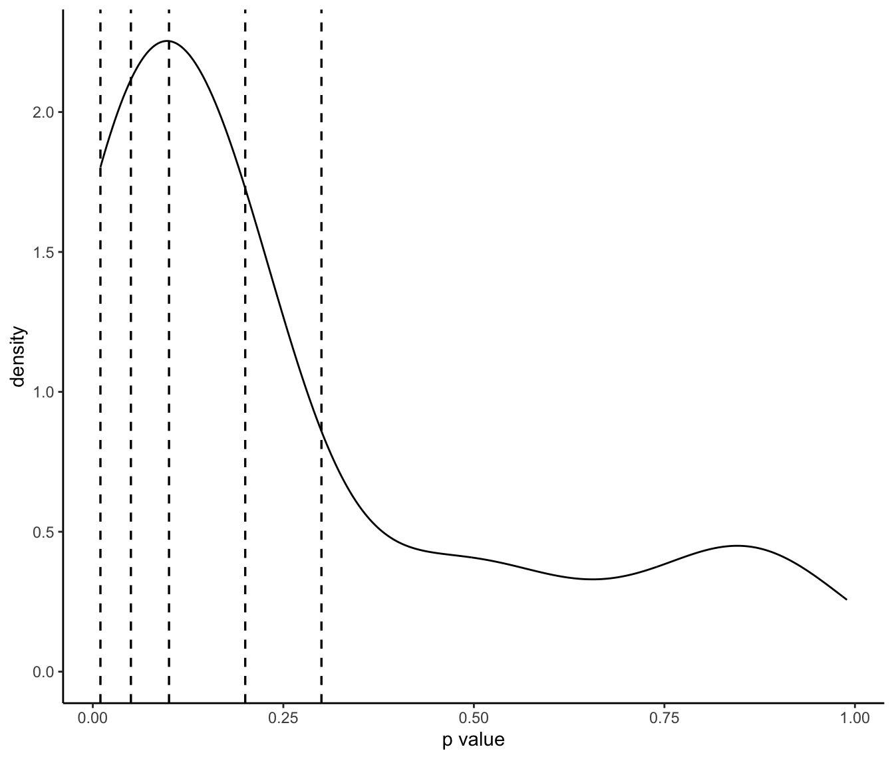
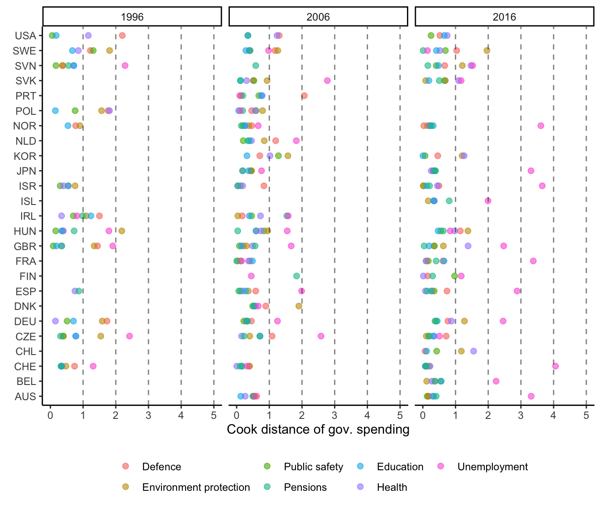

7 Appendix
7.1 Alternative age cutoffs
I also tested the main model at different age cutoffs and found the results to be robust.
| Age: 15-30 | Age: 18-30 | Age: 15-35 | Age: 18-35 | Age: 15-40 | Age: 18-40 | |
|---|---|---|---|---|---|---|
| opinion_all | 0.202*** | 0.202*** | 0.331*** | 0.331*** | 0.359*** | 0.359*** |
| (0.069) | (0.069) | (0.103) | (0.103) | (0.115) | (0.115) | |
| opinion_young | -0.097· | -0.097· | -0.222** | -0.222** | -0.252** | -0.252** |
| (0.063) | (0.063) | (0.099) | (0.099) | (0.108) | (0.108) | |
| pop_perc | -0.216 | -0.216 | -0.162 | -0.162 | -0.344** | -0.344** |
| (0.207) | (0.207) | (0.171) | (0.171) | (0.159) | (0.159) | |
| per706_avg_1to4 | 0.265· | 0.265· | 0.257· | 0.257· | 0.276· | 0.276· |
| (0.176) | (0.176) | (0.193) | (0.193) | (0.170) | (0.170) | |
| growth_avg_1to4 | -0.186 | -0.186 | -0.173 | -0.173 | -0.206 | -0.206 |
| (0.297) | (0.297) | (0.297) | (0.297) | (0.296) | (0.296) | |
| R^2 | 0.819 | 0.819 | 0.850 | 0.850 | 0.862 | 0.862 |
| Adj. R^2 | 0.635 | 0.635 | 0.689 | 0.689 | 0.716 | 0.716 |
| Num. obs. | 316 | 316 | 314 | 314 | 320 | 320 |
| *** p < 0.01; ** p < 0.05; * p < 0.1; . p < 0.2 | ||||||
7.2 Alternative cutoffs of unrepresentative observations
I also tested the main model with the exclusion of unrepresentative observations at different chi-square p-values and found the results to be robust. The distribution of observations per p-values is additionally presented in Figure 7.1.

Figure 7.1: Density of observations with p-value > 0.01
| p-value < 0.01 | p-value < 0.05 | p-value < 0.1 | p-value < 0.2 | p-value < 0.3 | |
|---|---|---|---|---|---|
| opinion_all | 0.299*** | 0.311*** | 0.331*** | 0.357*** | 0.357*** |
| (0.113) | (0.107) | (0.105) | (0.104) | (0.103) | |
| opinion_young | -0.192* | -0.201** | -0.222** | -0.261** | -0.261*** |
| (0.105) | (0.101) | (0.100) | (0.101) | (0.100) | |
| pop_perc | -0.169 | -0.173 | -0.162 | -0.154 | -0.155 |
| (0.184) | (0.184) | (0.173) | (0.166) | (0.163) | |
| per706_avg_1to4 | 0.292· | 0.289· | 0.257· | 0.197 | 0.206 |
| (0.199) | (0.200) | (0.195) | (0.193) | (0.181) | |
| growth_avg_1to4 | -0.153 | -0.158 | -0.173 | -0.275 | -0.271 |
| (0.311) | (0.311) | (0.300) | (0.282) | (0.276) | |
| R^2 | 0.855 | 0.878 | 0.874 | 0.848 | 0.848 |
| Adj. R^2 | 0.690 | 0.738 | 0.734 | 0.689 | 0.693 |
| Num. obs. | 295 | 312 | 321 | 334 | 338 |
| *** p < 0.01; ** p < 0.05; * p < 0.1; . p < 0.2 | |||||
7.3 Outliers
I also tested the main model with the exclusion of outliers at different cook distances and found the results to be robust. A graphical representation of those cutoffs are presented in Figure 7.2.

Figure 7.2: Cook distances with different cutoffs
| Cook distance < 1 | Cook distance < 2 | Cook distance < 3 | Cook distance < 4 | Cook distance < 5 | |
|---|---|---|---|---|---|
| opinion_all | 0.245*** | 0.268*** | 0.331*** | 0.242· | 0.324* |
| (0.072) | (0.097) | (0.103) | (0.155) | (0.176) | |
| opinion_young | -0.147** | -0.171* | -0.222** | -0.151 | -0.229· |
| (0.070) | (0.092) | (0.099) | (0.147) | (0.167) | |
| pop_perc | -0.173· | -0.222· | -0.162 | -0.026 | 0.032 |
| (0.117) | (0.139) | (0.171) | (0.239) | (0.245) | |
| per706_avg_1to4 | 0.278** | 0.290* | 0.257· | 0.444* | 0.422· |
| (0.111) | (0.167) | (0.193) | (0.236) | (0.259) | |
| growth_avg_1to4 | -0.074 | -0.176 | -0.173 | -0.097 | -0.106 |
| (0.258) | (0.282) | (0.297) | (0.304) | (0.307) | |
| R^2 | 0.817 | 0.853 | 0.850 | 0.817 | 0.783 |
| Adj. R^2 | 0.571 | 0.690 | 0.689 | 0.627 | 0.557 |
| Num. obs. | 256 | 304 | 314 | 319 | 320 |
| *** p < 0.01; ** p < 0.05; * p < 0.1; . p < 0.2 | |||||
7.4 Alternative model specifications
| Random intercept | Pooled intercept | Twoway Fixed Effects | Individual Fixed Effects | Time Fixed Effects | |
|---|---|---|---|---|---|
| (Intercept) | 3.268 | ||||
| (2.984) | |||||
| opinion_all | -0.007 | 0.367 | 0.331*** | 0.338*** | -0.025 |
| (0.050) | (0.103) | (0.106) | (0.048) | ||
| opinion_young | 0.001 | -0.326 | -0.222** | -0.227** | 0.013 |
| (0.054) | (0.099) | (0.100) | (0.053) | ||
| pop_perc | 0.040 | -0.158 | -0.162 | -0.343** | 0.129 |
| (0.124) | (0.171) | (0.156) | (0.160) | ||
| per706_avg_1to4 | -0.309* | 0.314 | 0.257· | 0.189 | -0.009 |
| (0.176) | (0.193) | (0.187) | (0.140) | ||
| growth_avg_1to4 | -0.747*** | 0.314 | -0.173 | -0.465* | -0.407· |
| (0.241) | (0.297) | (0.254) | (0.275) | ||
| R^2 | 0.058 | 1.000 | 0.850 | 0.844 | 0.189 |
| Adj. R^2 | 0.043 | 0.689 | 0.683 | 0.168 | |
| Num. obs. | 314 | 314 | 314 | 314 | 314 |
| *** p < 0.01; ** p < 0.05; * p < 0.1; . p < 0.2 | |||||